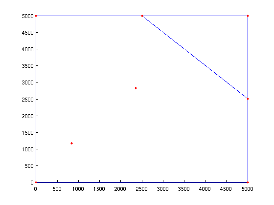
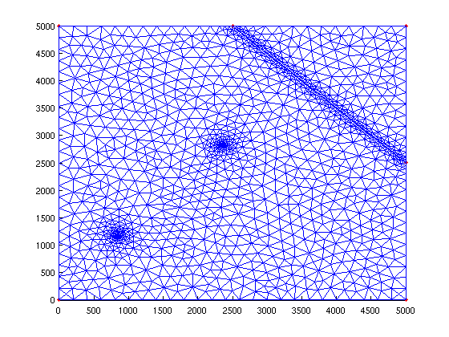
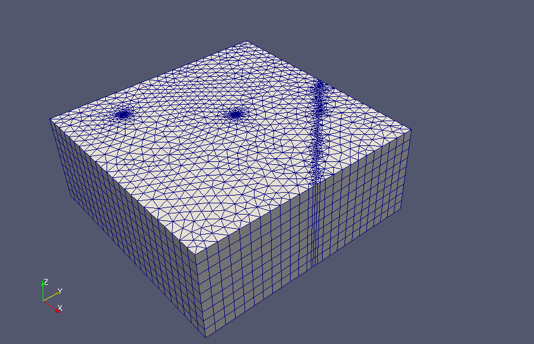

Mesh Generation using Matlab only
| main | Tutorials | Functions | website |
Contents
Geometry description (Simple Example)
In this example we will create a rectangular domain with size L = 5 km. In addition we assume that there are two wells located at (844,1177) and (2356,2829) coordinates and a stream which is described by the line (2500,5000) - (5000,2500).
The shapefiles in Matlab are structure variables with fields. To generate the mesh we need a structure variable with at least the following fields
dom.Geometry = 'Polygon';
this defines the shape. Other valid entries that mSim understands are 'Line' and 'Point'
dom.X = [0 0 5000 5000 0 nan]; dom.Y = [0 5000 5000 0 0 nan];
Note that it is necessary to include the nan at the end. The direction of the polygon points it is not important, however in case of domains with holes it is very important that the first polygon in the structure is the domain outline.
Next we will create a structure that will hold the river
riv.Geometry = 'Line';
riv.X = [2500 5000 nan];
riv.Y = [5000 2500 nan];
Because we want to refine the mesh around the river we have to provide few additional fields that control the refinment. Detailed explanation on the fields can be found on the Gmsh documetation (for example see the explanation t10.geo). Here we use the threshold attractor that requires the following properties:
riv.DistMin = 50; riv.DistMax = 500; riv.LcMin = 50; riv.LcMax = 500;
in short here we request that the maximum element size will be LcMin for elements closer to DistMin from the line. For elements further than DistMin the maximum element size will increase linearly between the values LcMin and LcMax up to DistMax.
Last we will create a similar structure for the wells:
wells(1,1).Geometry = 'Point'; wells(1,1).X = 844; wells(1,1).Y = 1177; wells(1,1).DistMin = 5; wells(1,1).DistMax = 500; wells(1,1).LcMin = 5; wells(1,1).LcMax = 200; wells(2,1).Geometry = 'Point'; wells(2,1).X = 2356; wells(2,1).Y = 2829; wells(2,1).DistMin = 5; wells(2,1).DistMax = 500; wells(2,1).LcMin = 5; wells(2,1).LcMax = 200;
Create Constructive Solid Geometry object
Next we need to create a Constructive Solid Geometry object that will describe the domain. First we will create an empty object that will hold the geometry:
simple_dom = CSGobj_v2(2,1,10,10,1);%Dim,Npoly,Nline,Npoints,usertol
- Dim: is the dimension of the domain (2 is the only valid option)
- Npoly: is the number of polygons that describe the outline of the simulated domain,
- Nline: the approximate number of lines (it is used only for space allocation)
- Npoints: the approximate number of points (it is used only for space allocation)
- usertol: Tolerance. Features closer to the tolerance will be joined
simple_dom is now an object which has the method .readshapefile. In fact simple_dom has more methods. If you type simple_dom. in command window or locate the cursor after the dot in a script and press TAB you will see a list of all available methods. To read the domain we can use the .readshapefile method as:
simple_dom=simple_dom.readshapefile(dom);
NOTE: The domain polygon must be the first polygon to be read
Using the same method we can import the river and the well structure into the CSG object.
simple_dom=simple_dom.readshapefile(riv); simple_dom=simple_dom.readshapefile(wells);
Anytime we can plot the contained geometry of the object using the method .plotCSGobj:
axis([-10 5010 -10 5010]) simple_dom.plotCSGobj;
Create Mesh using Gmsh
Before creating the input file for Gmsh we need to define few mesh options. The function msim_mesh_options returns a structure with all options needed to run Gmsh
meshopt=msim_mesh_options;
Here we need to define
meshopt.lc_gen = 200; % size of maximum element meshopt.embed_points = 1; % we want to embed the points into the mesh meshopt.embed_lines = 1; % we want to embed the lines into the mesh
the remaining default options are suitable for our case. So the options for the simple case are:
meshopt
meshopt =
lc_gen: 200
embed_points: 1
embed_lines: 1
el_type: 'triangle'
el_order: 1
incomplete: 0
Next we create the input file for Gmsh. This is an ascii file with .geo suffix. To create the file we call the method .writegeo
simple_dom.writegeo('simple_example',meshopt);
This created the simple_example.geo file in the workspace folder. Note that the threshold options are written in an parametric format at the begining of the *.geo file so that one can change the options of the input file without having to recreate the file.
To generate the mesh we call the method .runGmsh. The first agrument of the method is the input file that was generated from the method .writegeo. The second argument is the path where the Gmsh executable is located. There is also a third input which is currently on experimental stage and it is used to define the number of subdomains in case we want to split the domain into subdomains. Optionaly we can define the path explicitly in the method .runGmsh and then use an empty path
gmsh_path='/usr/bin/gmsh'; simple_dom.runGmsh('simple_example',gmsh_path,[])
Info : Running '/usr/bin/gmsh simple_example.geo -2' [1 node(s), max. 1 thread(s)] Info : Started on Fri Apr 4 11:43:24 2014 Info : Reading 'simple_example.geo'... Info : Done reading 'simple_example.geo' Info : Meshing 1D... Info : Meshing curve 1 (Line) Info : 2 points found in points clouds (0 edges) Info : 50 points found in points clouds (1 edges) Info : Meshing curve 2 (Line) Info : Meshing curve 3 (Line) Info : Meshing curve 4 (Line) Info : Meshing curve 5 (Line) Info : Meshing curve 6 (Line) Info : Meshing curve 7 (Line) Info : Done meshing 1D (0.020002 s) Info : Meshing 2D... Info : Meshing surface 1 (Plane, Delaunay) Info : Done meshing 2D (0.044002 s) Info : 1457 vertices 2990 elements Info : Writing 'simple_example.msh'... Info : Done writing 'simple_example.msh' Info : Stopped on Fri Apr 4 11:43:24 2014
In the command window we can see the process of the mesh generation, warning and errors. Note that it is still possible to create mesh even if error messages appear. In our example the mesh has been generated and written in the file simple_example.msh
Postprocess Mesh
After we generated the .msh file for the domain we can bringing it in the Matlab workspace using the functions read_2D_Gmsh. Howere before reading the mesh it is always a good practice to check the generated mesh. We can easily see the mesh by calling the method .showGmsh with inputs the file name the type of file we want to read (e.g. 'msh' for mesh, 'geo' for geometry) and the path of the Gmsh executable Note that this method launches the graphical user interface from Matlab and the Matlab will be shown as busy until the user closes the Gmsh interface
simple_dom.showGmsh('simple_example',gmsh_path, 'msh');
To read the mesh int the matlab workspace we use the functions read_2D_Gmsh. The first argument is the *.msh file generated by gmsh. The second argument displays some output if set to 1. This should be used when very large meshes are read and indicates that the code is working. The third argument switches between matlab and c++ code for reading the file. Below, first we use pure matlab code to read the mesh and then c code. There is no doubt that c is faster.
tic;
[p MSH]=read_2D_Gmsh('simple_example', 0, 0);
toc
Reading points... Reading Elements... Elapsed time is 1.994872 seconds.
tic;
[p MSH]=read_2D_Gmsh('simple_example', [], 1);
toc
18 The file name is simple_example.msh Reading nodes... Np = 1457 Reading Elements... Nel = 2990 Elapsed time is 0.020740 seconds.
In this example the mesh consists of linear triange elements, therefore we can visualize the mesh using the triplot matlab function
triplot(MSH(3,1).elem(1,1).id, p(:,1), p(:,2))
In case of 3D domains we can extrude the mesh using the function extrude_mesh. The inputs are the mesh node coordinates p and the 2D MSH structure, which are the outputs of the read_2D_Gmsh command plus the top and bottom elevation defined on the p coordinates, the distribution of the layers in the vertical direction and the element order, e.g. linear or quadratic. Let's define a constant top equal to 100m, zero bottom elevation and 10 layers uniformly distributed
top_elev=100*ones(size(p,1),1); bot_elev=zeros(size(p,1),1); t=linspace(0,1,10); %this will generate 10 layers evenly distributed [p3D MSH3D]=extrude_mesh(p,MSH,top_elev,bot_elev,t,'linear');
Visualize with paraview
To visualize the 3D mesh we use the Paraview sofware, because matlab's functions are rather limited and not suitable for large data set. First we write the mesh into a vtk format using WriteVtkMesh function. The input arguments are the filename, the Mesh we want to visualize, the properties defined on nodes, the properties defined on cells and the element type In our case the mesh ids are in MSH3D(4,1).elem.id, we do not have any properties, and the element type is prism, since we extruded triangles
WriteVtkMesh('simple_example',MSH3D(4,1).elem.id,p3D,[],[],'prism')
Writing Nodes coord... Writing Elements...
Then we can import the vtk file into Paraview. Below is a screenshot from the mesh visualization using paraview
